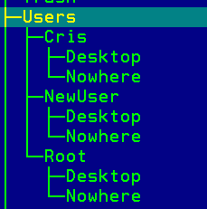
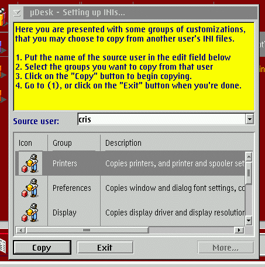

First of all, you're asked the name of the new user. Don't use names already entered.
After that, you're asked if you want to create a standard tree for the user.
This will create a user directory under the main user tree (look in mudesk.cfg) and place there some precompiled configuration files, the user and system INI files, the "desktop" tree, the "nowhere" directory, etc.

You can choose not to create a standard tree (for example because you want to put the files somewhere else, or because you're assigning a user to the standard OS/2 configuration with INI files in \OS2). In this case you'll have to complete the fields manually after the creation ends, and eventually create all the files that are needed and not already present.
Then you're asked if you want to customize the INI files.In this step you're allowed to copy some predefined groups of INI entries from another user's INI files. There are one group for printers, one for display, one for sounds, etc.. You can choose all the groups that apply. Of course, you have to select the source INI files using the drop-down box.
Here the program will take care of copying all that is necessary for a group (e.g. it will copy about a dozen INI entries for the "Printers" group).

Clicking on the "more..." button, you're presented with the complete list of entries in the INI files of the source user. This is for expert users that know what they are doing. You can choose the entries that you want to be copied to the new user's INI files.
You can repeat the steps above, to copy some of the settings from a user, then
another few settings from another user, and so on.